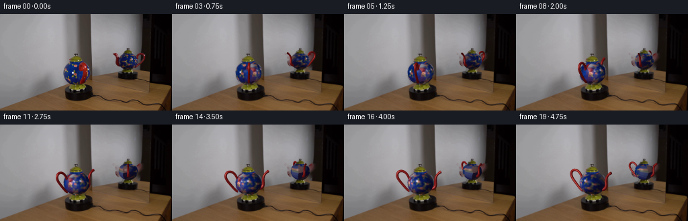
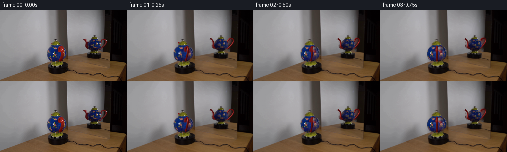
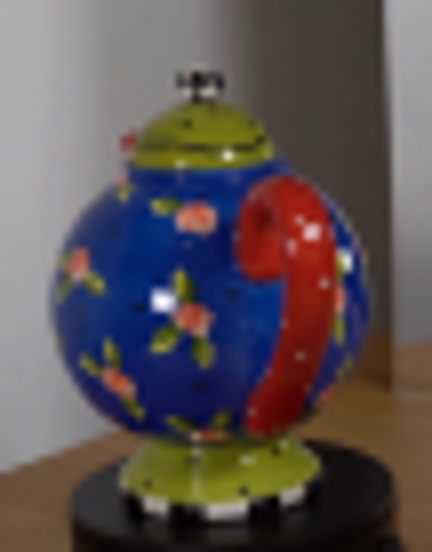
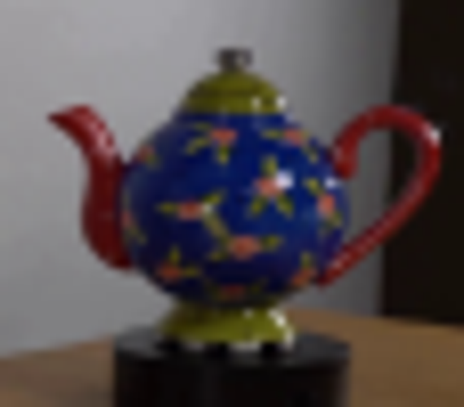

CODING AGENTS AS PIXEL WORLD MODELS
traex/GPT-6.1-Sol · 0122
点击播放 · 原生 RGB 像素
此结果可播放，但该运行尚未通过最终提交审核。页面展示不代表评测通过。
逐轮保存的候选
回放视频、检查图与代码变化。
每份候选均可单独播放。实际图片检查记录在下方工具轨迹中。
候选 01播放与检查图
点击播放 · 原生 RGB 像素


展开代码变化
--- 上一保存版本
+++ 本次保存版本
@@ -0,0 +1,237 @@
+import numpy as np
+from PIL import Image, ImageDraw
+import cv2
+from scipy.ndimage import map_coordinates, distance_transform_edt, gaussian_filter
+from scipy.interpolate import CubicSpline
+from pathlib import Path
+import artifact_io
+
+ROOT=Path(__file__).resolve().parent
+SRC=np.array(Image.open(ROOT/'first_frame.png').convert('RGB'))
+S=4; W=256*S; H=144*S
+A=1.01; B=.91; ZC=1.26
+# Orthographic views onto the ceramic body; second view has mirror chirality.
+views=[dict(cx=114.0,base=111.5,scale=19.1,elev=.16,phi=np.deg2rad(23),mirror=False),
+ dict(cx=190.9,base=87.5,scale=14.1,elev=.12,phi=np.deg2rad(100),mirror=True)]
+light=np.array([-.55,-.62,.55]);light/=np.linalg.norm(light)
+
+def polygons_mask(polys):
+ m=Image.new('L',(256,144));d=ImageDraw.Draw(m)
+ for p in polys:d.polygon(p,fill=255)
+ return np.array(m)
+# Remove only the old silhouette, while preserving all the fixed set.
+front_poly=[(111,58),(117,58),(117,62),(122,65),(124,70),(128,74),(132,82),(135,91),(132,99),(127,104),(123,107),(130,109),(129,113),(102,113),(102,108),(106,105),(101,102),(97,96),(94,90),(95,83),(98,77),(102,73),(102,67),(106,66),(109,62),(111,61)]
+mirror_poly=[(188,51),(193,51),(193,54),(198,57),(202,62),(204,62),(209,58),(213,58),(217,61),(217,66),(215,71),(211,76),(204,82),(200,85),(202,88),(182,89),(181,86),(183,83),(178,80),(174,75),(172,68),(173,64),(169,61),(168,59),(172,57),(176,60),(178,64),(181,61),(185,58),(186,55),(189,54)]
+mask=polygons_mask([front_poly,mirror_poly])
+bg=cv2.inpaint(SRC,mask,5,cv2.INPAINT_TELEA)
+# Smooth concealed regions only; the object and stationary base cover most of them.
+bg_big=np.array(Image.fromarray(bg).resize((W,H),Image.Resampling.BICUBIC)).astype(float)
+# Recover the original axisymmetric green lid and foot, including chrome knob.
+static_polys=[[(111,58),(116,58),(116,62),(121,65),(124,71),(121,73),(107,73),(102,71),(104,67),(109,63),(112,62)],
+ [(108,104),(120,104),(123,107),(127,109),(128,111),(125,113),(104,113),(102,111),(104,108)],
+ [(189,51),(193,51),(193,54),(196,55),(200,59),(201,61),(180,62),(183,59),(186,56),(189,55)],
+ [(186,82),(198,82),(200,85),(202,87),(199,89),(181,89),(181,87),(184,85)]]
+staticmask=polygons_mask(static_polys)
+static_big=cv2.resize(staticmask.astype(float)/255,(W,H),interpolation=cv2.INTER_LINEAR)
+src_big=np.array(Image.fromarray(SRC).resize((W,H),Image.Resampling.BICUBIC)).astype(float)
+
+
+def lighting(normal):
+ return .63+.40*np.maximum(np.sum(normal*light,axis=-1),0)
+
+# Surface coordinates for the body material.
+TH=768; PH=384
+theta=np.linspace(-np.pi,np.pi,TH,endpoint=False)[None,:]
+lat=np.linspace(-np.pi/2+.001,np.pi/2-.001,PH)[:,None]
+xx=A*np.cos(lat)*np.sin(theta); yy=-A*np.cos(lat)*np.cos(theta); zz=np.broadcast_to(ZC+B*np.sin(lat),(PH,TH))
+texture_candidates=[]; weights=[]
+for v in views:
+ ph=v['phi']; chir=-1 if v['mirror'] else 1
+ ang=ph+chir*theta
+ x=A*np.cos(lat)*np.sin(ang); y=-A*np.cos(lat)*np.cos(ang)
+ z=zz
+ nx=x/(A*A);ny=y/(A*A);nz=(z-ZC)/(B*B)
+ nn=np.stack(np.broadcast_arrays(nx,ny,nz),axis=-1);nn/=np.linalg.norm(nn,axis=-1,keepdims=True)
+ se=np.sin(v['elev']);ce=np.cos(v['elev'])
+ u=v['cx']+v['scale']*x;vp=v['base']-v['scale']*(z*ce+y*se)
+ sample=np.stack([map_coordinates(SRC[:,:,c].astype(float),[vp,u],order=1,mode='nearest') for c in range(3)],axis=-1)
+ facing=-nn[:,:,1]*ce+nn[:,:,2]*se
+ weight=np.clip((facing-.13)/.65,0,1)**2
+ # Exclude the original handle and spout from body material capture.
+ if not v['mirror']:
+ occlude=(u>118)&(u<131)&(vp>72)&(vp<106)&(sample[:,:,0]>sample[:,:,2]*.72)&(sample[:,:,0]>sample[:,:,1]*1.5)
+ # The red near handle occupies this entire narrow footprint.
+ occpoly=polygons_mask([[(121,73),(125,73),(129,79),(130,86),(128,94),(124,102),(119,106),(116,105),(121,94),(123,86),(118,84),(118,78)]])
+ else:
+ occlude=((u<180)|(u>203))&(sample[:,:,0]>sample[:,:,2]*.8)&(sample[:,:,0]>sample[:,:,1]*1.5)
+ occpoly=polygons_mask([[(167,56),(177,57),(181,70),(179,79),(173,79)],[(204,63),(209,57),(217,57),(219,66),(214,75),(205,83),(200,83)]])
+ occlude |= map_coordinates(occpoly.astype(float),[vp,u],order=0,mode='nearest')>0
+ # Green lid and pedestal should never get baked into the blue body.
+ occlude|=(sample[:,:,1]>sample[:,:,2]*1.10)&(sample[:,:,2]<65)
+ weight[occlude]=0
+ intrinsic=sample/lighting(nn)[:,:,None]
+ # Glossy white points are illumination rather than painted marks.
+ specmask=(sample.min(axis=-1)>155)
+ weight[specmask]*=.05
+ texture_candidates.append(intrinsic);weights.append(weight)
+ws=np.stack(weights)
+tx=(np.stack(texture_candidates)*ws[:,:,:,None]).sum(axis=0)/(ws.sum(axis=0)[:,:,None]+1e-6)
+valid=ws.sum(axis=0)>.025
+# Periodic nearest data fill for the small unobserved portion of the reverse side.
+ext=np.concatenate([tx,tx,tx],axis=1);validext=np.concatenate([valid,valid,valid],axis=1)
+inds=distance_transform_edt(~validext,return_distances=False,return_indices=True)
+filled=ext[inds[0],inds[1]][:,TH:2*TH]
+tx=np.where(valid[:,:,None],tx,filled)
+# Small local averaging reduces texture seams, not the hand-painted floral motifs.
+tx=np.clip(tx,0,255)
+Image.fromarray(tx.astype(np.uint8)).save(ROOT/'.tmp/body_texture.png')
+
+# Fixed orthographic per-pixel ray intersection, independently for each view.
+Y,X=np.mgrid[0:H,0:W]
+cache=[]
+for v in views:
+ sc=v['scale']*S; se=np.sin(v['elev']);ce=np.cos(v['elev'])
+ x=(X+.5-v['cx']*S)/sc
+ up=(v['base']*S-Y-.5)/sc-ZC*ce
+ # y = up*sin(elev)+depth*cos(elev), z-zc = up*cos(elev)-depth*sin(elev)
+ qa=ce*ce/A**2+se*se/B**2
+ qb=2*up*se*ce*(1/A**2-1/B**2)
+ qc=x*x/A**2+up*up*(se*se/A**2+ce*ce/B**2)-1
+ disc=qb*qb-4*qa*qc
+ hit=disc>=0
+ d=(-qb-np.sqrt(np.maximum(disc,0)))/(2*qa)
+ y=up*se+d*ce;z=ZC+up*ce-d*se
+ n=np.stack([x/A**2,y/A**2,(z-ZC)/B**2],axis=-1);n/=np.linalg.norm(n,axis=-1,keepdims=True)
+ ang=np.arctan2(x,-y)
+ latpix=np.arcsin(np.clip((z-ZC)/B,-1,1))
+ # Preserve the actual rim of the captured blue ceramic ellipse.
+ cache.append((hit,x,y,z,d,n,ang,latpix))
+
+# Curved glazed ceramic attachments, swept tubes generated from cubic paths.
+handle=np.array([[.90,1.63],[1.08,1.97],[1.33,2.15],[1.59,2.16],[1.77,2.02],[1.82,1.78],[1.71,1.50],[1.45,1.18],[1.12,.82],[.87,.64]])
+spout=np.array([[.86,.85],[1.04,.91],[1.16,1.11],[1.16,1.44],[1.20,1.75],[1.35,2.00],[1.60,2.19]])
+
+def tube_mesh(path,kind,phi,mirror):
+ t=np.linspace(0,1,len(path));spl=CubicSpline(t,path,axis=0)
+ tt=np.linspace(0,1,56 if kind=='handle' else 40)
+ p=spl(tt);dp=spl(tt,1)
+ if kind=='handle':
+ # Match perspective calibration of the near and reflected attachment.
+ if not mirror:p[:,1]+=.06*np.sin(np.pi*tt)
+ else:p[:,1]-=.09*np.sin(np.pi*tt)
+ rad=.081+.018*np.sin(np.pi*tt)
+ else:
+ rad=.145*(1-tt)+.070*tt
+ rad+=.034*np.exp(-((tt-.98)/.09)**2)
+ nrad=np.stack([-dp[:,1],dp[:,0]],axis=1);nrad/=np.linalg.norm(nrad,axis=1,keepdims=True)
+ ns=18
+ q=np.linspace(0,2*np.pi,ns,endpoint=False)
+ rr=p[:,0,None]+rad[:,None]*np.cos(q)[None,:]*nrad[:,0,None]
+ z=p[:,1,None]+rad[:,None]*np.cos(q)[None,:]*nrad[:,1,None]
+ tangentoff=rad[:,None]*np.sin(q)[None,:]
+ # Mirror chirality changes the local azimuth and tangent basis.
+ sgn=1 if kind=='handle' else -1
+ hx=np.sin(phi)*sgn;hy=-np.cos(phi)*sgn
+ txv=np.cos(phi);tyv=np.sin(phi)
+ if mirror:txv=-txv;tyv=-tyv
+ x=rr*hx+tangentoff*txv;y=rr*hy+tangentoff*tyv
+ nr=nrad[:,0,None]*np.cos(q)[None,:]; nz=nrad[:,1,None]*np.cos(q)[None,:]
+ nx=nr*hx+np.sin(q)[None,:]*txv
+ ny=nr*hy+np.sin(q)[None,:]*tyv
+ nz=np.broadcast_to(nz,nx.shape)
+ verts=np.stack([x,y,z],axis=-1).reshape(-1,3)
+ norm=np.stack([nx,ny,nz],axis=-1).reshape(-1,3)
+ tris=[]
+ for i in range(len(tt)-1):
+ for j in range(ns):
+ a=i*ns+j;b=i*ns+(j+1)%ns;c=(i+1)*ns+j;d=(i+1)*ns+(j+1)%ns
+ tris += [(a,c,b),(b,c,d)]
+ # Spout opening: a dark elliptical inner glazed bore, rather than a solid cap.
+ return verts,norm,np.array(tris),len(tt),ns
+
+
+def render_tube(img,depth,v,phi,path,kind):
+ verts,norm,tris,nt,ns=tube_mesh(path,kind,phi,v['mirror'])
+ se=np.sin(v['elev']);ce=np.cos(v['elev']);sc=v['scale']*S
+ xp=v['cx']*S+verts[:,0]*sc-.5
+ yp=v['base']*S-(verts[:,2]*ce+verts[:,1]*se)*sc-.5
+ dp=verts[:,1]*ce-verts[:,2]*se
+ diffuse=.44+.50*np.maximum(norm@light,0)
+ # Low-amplitude variations in glaze keep the red ceramic from looking plastic.
+ sheen=np.maximum(norm@np.array([-.28,-.93,.24]),0)**28
+ cols=np.array([144,23,24])[None,:]*diffuse[:,None]+sheen[:,None]*np.array([118,107,93])[None,:]
+ cols+=np.sin(verts[:,2]*16+verts[:,0]*11)[:,None]*np.array([3,1,1])[None,:]
+ def drawtri(ids,color=None):
+ xs=xp[ids];ys=yp[ids];ds=dp[ids]
+ minx=max(0,int(np.floor(xs.min())));maxx=min(W-1,int(np.ceil(xs.max())))
+ miny=max(0,int(np.floor(ys.min())));maxy=min(H-1,int(np.ceil(ys.max())))
+ if minx>maxx or miny>maxy:return
+ den=(ys[1]-ys[2])*(xs[0]-xs[2])+(xs[2]-xs[1])*(ys[0]-ys[2])
+ if abs(den)<1e-9:return
+ gx,gy=np.meshgrid(np.arange(minx,maxx+1),np.arange(miny,maxy+1))
+ wa=((ys[1]-ys[2])*(gx-xs[2])+(xs[2]-xs[1])*(gy-ys[2]))/den
+ wb=((ys[2]-ys[0])*(gx-xs[2])+(xs[0]-xs[2])*(gy-ys[2]))/den
+ wc=1-wa-wb
+ zd=wa*ds[0]+wb*ds[1]+wc*ds[2]
+ zb=depth[miny:maxy+1,minx:maxx+1]
+ ok=(wa>=-.001)&(wb>=-.001)&(wc>=-.001)&(zd<zb)
+ if not np.any(ok):return
+ cs=cols[ids] if color is None else np.broadcast_to(color,(3,3))
+ col=wa[:,:,None]*cs[0]+wb[:,:,None]*cs[1]+wc[:,:,None]*cs[2]
+ img[miny:maxy+1,minx:maxx+1][ok]=col[ok];zb[ok]=zd[ok]
+ for ids in tris:drawtri(ids)
+ if kind=='spout':
+ # inner dark ring at the open tip, on the cut plane.
+ end=verts[-ns:].mean(axis=0); ring=end+(verts[-ns:]-end)*.60
+ verts2=np.concatenate([verts,ring,end[None]],axis=0)
+ xp=np.r_[xp,v['cx']*S+ring[:,0]*sc-.5,v['cx']*S+end[0]*sc-.5]
+ yp=np.r_[yp,v['base']*S-(ring[:,2]*ce+ring[:,1]*se)*sc-.5,v['base']*S-(end[2]*ce+end[1]*se)*sc-.5]
+ dp=np.r_[dp,ring[:,1]*ce-ring[:,2]*se,end[1]*ce-end[2]*se]-.003
+ n0=len(verts)
+ for j in range(ns):drawtri(np.array([n0+j,n0+(j+1)%ns,n0+ns]),np.array([43,11,12]))
+
+
+def render(k):
+ # Uniform real-time clockwise turn about the vertical spindle.
+ turn=np.deg2rad(-29.0)*(k/4)
+ img=bg_big.copy()
+ # Replace body with relit rotation of the recovered object material.
+ depths=[]
+ for v,c in zip(views,cache):
+ hit,x,y,z,d,n,ang,lp=c
+ ph=v['phi']+(-turn if v['mirror'] else turn)
+ local=ph-ang if v['mirror'] else ang-ph
+ tu=((local+np.pi)/(2*np.pi)*TH)%TH
+ tv=(lp+np.pi/2)/(np.pi)*(PH-1)
+ col=np.stack([map_coordinates(tx[:,:,ch],[tv,tu],order=1,mode='wrap') for ch in range(3)],axis=-1)
+ col*=lighting(n)[:,:,None]
+ # A stationary light produces a stationary specular highlight as the glaze spins.
+ hn=np.array([-.26,-.91,.32]);hn/=np.linalg.norm(hn)
+ spec=np.maximum(n@hn,0)**100
+ col+=spec[:,:,None]*np.array([42,43,39])[None,None,:]
+ img[hit]=col[hit]
+ # The depth origin is common to the body and attachment meshes.
+ depth=np.full((H,W),np.inf);depth[hit]=(d-ZC*np.sin(v['elev']))[hit]
+ depths.append(depth)
+ # Keep exact stationary rotationally symmetric ceramic trim and turntable.
+ img=img*(1-static_big[:,:,None])+src_big*static_big[:,:,None]
+ # For trim depth: thin footprint approximately at the near side of each collar.
+ for vi,(v,depth) in enumerate(zip(views,depths)):
+ region=static_big>.2
+ if vi==0:region&=(X<150*S)
+ else:region&=(X>150*S)
+ # Near surface of lid or pedestal. Negative means toward the camera.
+ depth[region]=np.minimum(depth[region],-.38-(v['base']-Y[region]/S)/v['scale']*np.sin(v['elev']))
+ ph=v['phi']+(-turn if v['mirror'] else turn)
+ render_tube(img,depth,v,ph,handle,'handle')
+ render_tube(img,depth,v,ph,spout,'spout')
+ # Gentle optical blur matches the photographic source, with supersampled silhouettes.
+ out=cv2.resize(np.clip(img,0,255).astype(np.uint8),(256,144),interpolation=cv2.INTER_AREA)
+ return out
+
+if __name__=='__main__':
+ frames=[SRC.copy()]
+ for k in range(1,20):
+ frames.append(render(k)); print('frame',k,flush=True)
+ artifact_io.save(np.stack(frames).astype(np.uint8),ROOT)
+ Image.fromarray(render(0)).save(ROOT/'.tmp/model_zero.png')
可观测工具轨迹
实际执行的命令与返回图片。
命令 1exit 0
/bin/bash -lc 'ls -la && cat prompt.txt && cat GENERATION_RULES.md'
命令 2exit 0
/bin/bash -lc "cat artifact_io.py && python - <<'PY'
from PIL import Image
im=Image.open('first_frame.png'); print(im.size)
im.resize((1024,576)).save('.tmp/frame_large.png')
PY"命令 3exit 0
/bin/bash -lc "python - <<'PY'
import importlib.util
for x in ['numpy','scipy','PIL','cv2','skimage']:
print(x,importlib.util.find_spec(x) is not None)
from PIL import Image
im=Image.open('first_frame.png'); im.crop((88,50,142,119)).resize((432,552)).save('.tmp/front.png'); im.crop((162,45,219,95)).resize((570,500)).save('.tmp/mirror.png')
PY"命令 4exit 0
/bin/bash -lc "cat > generate.py <<'PY'
import numpy as np
from PIL import Image, ImageDraw
import cv2
from scipy.ndimage import map_coordinates, distance_transform_edt, gaussian_filter
from scipy.interpolate import CubicSpline
from pathlib import Path
import artifact_io
ROOT=Path(__file__).resolve().parent
SRC=np.array(Image.open(ROOT/'first_frame.png').convert('RGB'))
S=4; W=256*S; H=144*S
A=1.01; B=.91; ZC=1.26
# Orthographic views onto the ceramic body; second view has mirror chirality.
views=[dict(cx=114.0,base=111.5,scale=19.1,elev=.16,phi=np.deg2rad(23),mirror=False),
dict(cx=190.9,base=87.5,scale=14.1,elev=.12,phi=np.deg2rad(100),mirror=True)]
light=np.array([-.55,-.62,.55]);light/=np.linalg.norm(light)
def polygons_mask(polys):
m=Image.new('L',(256,144));d=ImageDraw.Draw(m)
for p in polys:d.polygon(p,fill=255)
return np.array(m)
# Remove only the old silhouette, while preserving all the fixed set.
front_poly=[(111,58),(117,58),(117,62),(122,65),(124,70),(128,74),(132,82),(135,91),(132,99),(127,104),(123,107),(130,109),(129,113),(102,113),(102,108),(106,105),(101,102),(97,96),(94,90),(95,83),(98,77),(102,73),(102,67),(106,66),(109,62),(111,61)]
mirror_poly=[(188,51),(193,51),(193,54),(198,57),(202,62),(204,62),(209,58),(213,58),(217,61),(217,66),(215,71),(211,76),(204,82),(200,85),(202,88),(182,89),(181,86),(183,83),(178,80),(174,75),(172,68),(173,64),(169,61),(168,59),(172,57),(176,60),(178,64),(181,61),(185,58),(186,55),(189,54)]
mask=polygons_mask([front_poly,mirror_poly])
bg=cv2.inpaint(SRC,mask,5,cv2.INPAINT_TELEA)
# Smooth concealed regions only; the object and stationary base cover most of them.
bg_big=np.array(Image.fromarray(bg).resize((W,H),Image.Resampling.BICUBIC)).astype(float)
# Recover the original axisymmetric green lid and foot, including chrome knob.
static_polys=[[(111,58),(116,58),(116,62),(121,65),(124,71),(121,73),(107,73),(102,71),(104,67),(109,63),(112,62)],
[(108,104),(120,104),(123,107),(127,109),(128,111),(125,113),(104,113),(102,111),(104,108)],
[(189,51),(193,51),(193,54),(196,55),(200,59),(201,61),(180,62),(183,59),(186,56),(189,55)],
[(186,82),(198,82),(200,85),(202,87),(199,89),(181,89),(181,87),(184,85)]]
staticmask=polygons_mask(static_polys)
static_big=cv2.resize(staticmask.astype(float)/255,(W,H),interpolation=cv2.INTER_LINEAR)
src_big=np.array(Image.fromarray(SRC).resize((W,H),Image.Resampling.BICUBIC)).astype(float)
def lighting(normal):
return .63+.40*np.maximum(np.sum(normal*light,axis=-1),0)
# Surface coordinates for the body material.
TH=768; PH=384
theta=np.linspace(-np.pi,np.pi,TH,endpoint=False)[None,:]
lat=np.linspace(-np.pi/2+.001,np.pi/2-.001,PH)[:,None]
xx=A*np.cos(lat)*np.sin(theta); yy=-A*np.cos(lat)*np.cos(theta); zz=np.broadcast_to(ZC+B*np.sin(lat),(PH,TH))
texture_candidates=[]; weights=[]
for v in views:
ph=v['phi']; chir=-1 if v['mirror'] else 1
ang=ph+chir*theta
x=A*np.cos(lat)*np.sin(ang); y=-A*np.cos(lat)*np.cos(ang)
z=zz
nx=x/(A*A);ny=y/(A*A);nz=(z-ZC)/(B*B)
nn=np.stack(np.broadcast_arrays(nx,ny,nz),axis=-1);nn/=np.linalg.norm(nn,axis=-1,keepdims=True)
se=np.sin(v['elev']);ce=np.cos(v['elev'])
u=v['cx']+v['scale']*x;vp=v['base']-v['scale']*(z*ce+y*se)
sample=np.stack([map_coordinates(SRC[:,:,c].astype(float),[vp,u],order=1,mode='nearest') for c in range(3)],axis=-1)
facing=-nn[:,:,1]*ce+nn[:,:,2]*se
weight=np.clip((facing-.13)/.65,0,1)**2
# Exclude the original handle and spout from body material capture.
if not v['mirror']:
occlude=(u>118)&(u<131)&(vp>72)&(vp<106)&(sample[:,:,0]>sample[:,:,2]*.72)&(sample[:,:,0]>sample[:,:,1]*1.5)
# The red near handle occupies this entire narrow footprint.
occpoly=polygons_mask([[(121,73),(125,73),(129,79),(130,86),(128,94),(124,102),(119,106),(116,105),(121,94),(123,86),(118,84),(118,78)]])
else:
occlude=((u<180)|(u>203))&(sample[:,:,0]>sample[:,:,2]*.8)&(sample[:,:,0]>sample[:,:,1]*1.5)
occpoly=polygons_mask([[(167,56),(177,57),(181,70),(179,79),(173,79)],[(204,63),(209,57),(217,57),(219,66),(214,75),(205,83),(200,83)]])
occlude |= map_coordinates(occpoly.astype(float),[vp,u],order=0,mode='nearest')>0
# Green lid and pedestal should never get baked into the blue body.
occlude|=(sample[:,:,1]>sample[:,:,2]*1.10)&(sample[:,:,2]<65)
weight[occlude]=0
intrinsic=sample/lighting(nn)[:,:,None]
# Glossy white points are illumination rather than painted marks.
specmask=(sample.min(axis=-1)>155)
weight[specmask]*=.05
texture_candidates.append(intrinsic);weights.append(weight)
ws=np.stack(weights)
tx=(np.stack(texture_candidates)*ws[:,:,:,None]).sum(axis=0)/(ws.sum(axis=0)[:,:,None]+1e-6)
valid=ws.sum(axis=0)>.025
# Periodic nearest data fill for the small unobserved portion of the reverse side.
ext=np.concatenate([tx,tx,tx],axis=1);validext=np.concatenate([valid,valid,valid],axis=1)
inds=distance_transform_edt(~validext,return_distances=False,return_indices=True)
filled=ext[inds[0],inds[1]][:,TH:2*TH]
tx=np.where(valid[:,:,None],tx,filled)
# Small local averaging reduces texture seams, not the hand-painted floral motifs.
tx=np.clip(tx,0,255)
Image.fromarray(tx.astype(np.uint8)).save(ROOT/'.tmp/body_texture.png')
# Fixed orthographic per-pixel ray intersection, independently for each view.
Y,X=np.mgrid[0:H,0:W]
cache=[]
for v in views:
sc=v['scale']*S; se=np.sin(v['elev']);ce=np.cos(v['elev'])
x=(X+.5-v['cx']*S)/sc
up=(v['base']*S-Y-.5)/sc-ZC*ce
# y = up*sin(elev)+depth*cos(elev), z-zc = up*cos(elev)-depth*sin(elev)
qa=ce*ce/A**2+se*se/B**2
qb=2*up*se*ce*(1/A**2-1/B**2)
qc=x*x/A**2+up*up*(se*se/A**2+ce*ce/B**2)-1
disc=qb*qb-4*qa*qc
hit=disc>=0
d=(-qb-np.sqrt(np.maximum(disc,0)))/(2*qa)
y=up*se+d*ce;z=ZC+up*ce-d*se
n=np.stack([x/A**2,y/A**2,(z-ZC)/B**2],axis=-1);n/=np.linalg.norm(n,axis=-1,keepdims=True)
ang=np.arctan2(x,-y)
latpix=np.arcsin(np.clip((z-ZC)/B,-1,1))
# Preserve the actual rim of the captured blue ceramic ellipse.
cache.append((hit,x,y,z,d,n,ang,latpix))
# Curved glazed ceramic attachments, swept tubes generated from cubic paths.
handle=np.array([[.90,1.63],[1.08,1.97],[1.33,2.15],[1.59,2.16],[1.77,2.02],[1.82,1.78],[1.71,1.50],[1.45,1.18],[1.12,.82],[.87,.64]])
spout=np.array([[.86,.85],[1.04,.91],[1.16,1.11],[1.16,1.44],[1.20,1.75],[1.35,2.00],[1.60,2.19]])
def tube_mesh(path,kind,phi,mirror):
t=np.linspace(0,1,len(path));spl=CubicSpline(t,path,axis=0)
tt=np.linspace(0,1,56 if kind=='handle' else 40)
p=spl(tt);dp=spl(tt,1)
if kind=='handle':
# Match perspective calibration of the near and reflected attachment.
if not mirror:p[:,1]+=.06*np.sin(np.pi*tt)
else:p[:,1]-=.09*np.sin(np.pi*tt)
rad=.081+.018*np.sin(np.pi*tt)
else:
rad=.145*(1-tt)+.070*tt
rad+=.034*np.exp(-((tt-.98)/.09)**2)
nrad=np.stack([-dp[:,1],dp[:,0]],axis=1);nrad/=np.linalg.norm(nrad,axis=1,keepdims=True)
ns=18
q=np.linspace(0,2*np.pi,ns,endpoint=False)
rr=p[:,0,None]+rad[:,None]*np.cos(q)[None,:]*nrad[:,0,None]
z=p[:,1,None]+rad[:,None]*np.cos(q)[None,:]*nrad[:,1,None]
tangentoff=rad[:,None]*np.sin(q)[None,:]
# Mirror chirality changes the local azimuth and tangent basis.
sgn=1 if kind=='handle' else -1
hx=np.sin(phi)*sgn;hy=-np.cos(phi)*sgn
txv=np.cos(phi);tyv=np.sin(phi)
if mirror:txv=-txv;tyv=-tyv
x=rr*hx+tangentoff*txv;y=rr*hy+tangentoff*tyv
nr=nrad[:,0,None]*np.cos(q)[None,:]; nz=nrad[:,1,None]*np.cos(q)[None,:]
nx=nr*hx+np.sin(q)[None,:]*txv
ny=nr*hy+np.sin(q)[None,:]*tyv
nz=np.broadcast_to(nz,nx.shape)
verts=np.stack([x,y,z],axis=-1).reshape(-1,3)
norm=np.stack([nx,ny,nz],axis=-1).reshape(-1,3)
tris=[]
for i in range(len(tt)-1):
for j in range(ns):
a=i*ns+j;b=i*ns+(j+1)%ns;c=(i+1)*ns+j;d=(i+1)*ns+(j+1)%ns
tris += [(a,c,b),(b,c,d)]
# Spout opening: a dark elliptical inner glazed bore, rather than a solid cap.
return verts,norm,np.array(tris),len(tt),ns
def render_tube(img,depth,v,phi,path,kind):
verts,norm,tris,nt,ns=tube_mesh(path,kind,phi,v['mirror'])
se=np.sin(v['elev']);ce=np.cos(v['elev']);sc=v['scale']*S
xp=v['cx']*S+verts[:,0]*sc-.5
yp=v['base']*S-(verts[:,2]*ce+verts[:,1]*se)*sc-.5
dp=verts[:,1]*ce-verts[:,2]*se
diffuse=.44+.50*np.maximum(norm@light,0)
# Low-amplitude variations in glaze keep the red ceramic from looking plastic.
sheen=np.maximum(norm@np.array([-.28,-.93,.24]),0)**28
cols=np.array([144,23,24])[None,:]*diffuse[:,None]+sheen[:,None]*np.array([118,107,93])[None,:]
cols+=np.sin(verts[:,2]*16+verts[:,0]*11)[:,None]*np.array([3,1,1])[None,:]
def drawtri(ids,color=None):
xs=xp[ids];ys=yp[ids];ds=dp[ids]
minx=max(0,int(np.floor(xs.min())));maxx=min(W-1,int(np.ceil(xs.max())))
miny=max(0,int(np.floor(ys.min())));maxy=min(H-1,int(np.ceil(ys.max())))
if minx>maxx or miny>maxy:return
den=(ys[1]-ys[2])*(xs[0]-xs[2])+(xs[2]-xs[1])*(ys[0]-ys[2])
if abs(den)<1e-9:return
gx,gy=np.meshgrid(np.arange(minx,maxx+1),np.arange(miny,maxy+1))
wa=((ys[1]-ys[2])*(gx-xs[2])+(xs[2]-xs[1])*(gy-ys[2]))/den
wb=((ys[2]-ys[0])*(gx-xs[2])+(xs[0]-xs[2])*(gy-ys[2]))/den
wc=1-wa-wb
zd=wa*ds[0]+wb*ds[1]+wc*ds[2]
zb=depth[miny:maxy+1,minx:maxx+1]
ok=(wa>=-.001)&(wb>=-.001)&(wc>=-.001)&(zd<zb)
if not np.any(ok):return
cs=cols[ids] if color is None else np.broadcast_to(color,(3,3))
col=wa[:,:,None]*cs[0]+wb[:,:,None]*cs[1]+wc[:,:,None]*cs[2]
img[miny:maxy+1,minx:maxx+1][ok]=col[ok];zb[ok]=zd[ok]
for ids in tris:drawtri(ids)
if kind=='spout':
# inner dark ring at the open tip, on the cut plane.
end=verts[-ns:].mean(axis=0); ring=end+(verts[-ns:]-end)*.60
verts2=np.concatenate([verts,ring,end[None]],axis=0)
xp=np.r_[xp,v['cx']*S+ring[:,0]*sc-.5,v['cx']*S+end[0]*sc-.5]
yp=np.r_[yp,v['base']*S-(ring[:,2]*ce+ring[:,1]*se)*sc-.5,v['base']*S-(end[2]*ce+end[1]*se)*sc-.5]
dp=np.r_[dp,ring[:,1]*ce-ring[:,2]*se,end[1]*ce-end[2]*se]-.003
n0=len(verts)
for j in range(ns):drawtri(np.array([n0+j,n0+(j+1)%ns,n0+ns]),np.array([43,11,12]))
def render(k):
# Uniform real-time clockwise turn about the vertical spindle.
turn=np.deg2rad(-29.0)*(k/4)
img=bg_big.copy()
# Replace body with relit rotation of the recovered object material.
depths=[]
for v,c in zip(views,cache):
hit,x,y,z,d,n,ang,lp=c
ph=v['phi']+(-turn if v['mirror'] else turn)
local=ph-ang if v['mirror'] else ang-ph
tu=((local+np.pi)/(2*np.pi)*TH)%TH
tv=(lp+np.pi/2)/(np.pi)*(PH-1)
col=np.stack([map_coordinates(tx[:,:,ch],[tv,tu],order=1,mode='wrap') for ch in range(3)],axis=-1)
col*=lighting(n)[:,:,None]
# A stationary light produces a stationary specular highlight as the glaze spins.
hn=np.array([-.26,-.91,.32]);hn/=np.linalg.norm(hn)
spec=np.maximum(n@hn,0)**100
col+=spec[:,:,None]*np.array([42,43,39])[None,None,:]
img[hit]=col[hit]
# The depth origin is common to the body and attachment meshes.
depth=np.full((H,W),np.inf);depth[hit]=(d-ZC*np.sin(v['elev']))[hit]
depths.append(depth)
# Keep exact stationary rotationally symmetric ceramic trim and turntable.
img=img*(1-static_big[:,:,None])+src_big*static_big[:,:,None]
# For trim depth: thin footprint approximately at the near side of each collar.
for vi,(v,depth) in enumerate(zip(views,depths)):
region=static_big>.2
if vi==0:region&=(X<150*S)
else:region&=(X>150*S)
# Near surface of lid or pedestal. Negative means toward the camera.
depth[region]=np.minimum(depth[region],-.38-(v['base']-Y[region]/S)/v['scale']*np.sin(v['elev']))
ph=v['phi']+(-turn if v['mirror'] else turn)
render_tube(img,depth,v,ph,handle,'handle')
render_tube(img,depth,v,ph,spout,'spout')
# Gentle optical blur matches the photographic source, with supersampled silhouettes.
out=cv2.resize(np.clip(img,0,255).astype(np.uint8),(256,144),interpolation=cv2.INTER_AREA)
return out
if __name__=='__main__':
frames=[SRC.copy()]
for k in range(1,20):
frames.append(render(k)); print('frame',k,flush=True)
artifact_io.save(np.stack(frames).astype(np.uint8),ROOT)
Image.fromarray(render(0)).save(ROOT/'.tmp/model_zero.png')
PY
python generate.py"命令 5exit 0
/bin/bash -lc "python - <<'PY'
from PIL import Image
for s in ['.tmp/model_zero.png','frames/01.png','frames/11.png','frames/19.png']:
im=Image.open(s); im.resize((1024,576)).save('.tmp/'+s.split('/')[-1]+'_big.png')
PY"视觉工具实际返回图片 1

视觉工具实际返回图片 2

视觉工具实际返回图片 3

视觉工具实际返回图片 4

保存候选 1 份；完成命令 5 次；可验证图片返回 4 张。原始 API 响应与完整日志保留在本地。